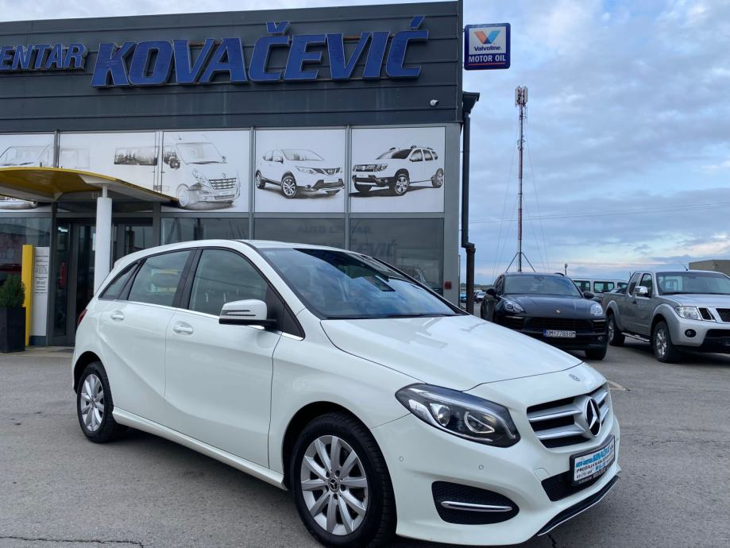

AUTO CENTAR KOVAČEVIĆ
USLUGE KOJE NUDIMO
| PRODAJA RABLJENIH VOZILA | OTKUP VOZILA | ZAMJENSKO VOZILO |
| Kod nas ćete pronaći široki izbor rabljenih vozila sa jamstvom. U prodaji rabljenih vozila smo preko 20 godina, a želja nam je uz maksimalnu posvećenost poslu i našim strankama, nastaviti opravdavati povjerenje velikog broja kupaca kroz još dugi niz godina. | Želite nam prodati Vaše vozilo? Nazovite nas radi procjene i dogovora. Otkupljujemo osobna i teretna vozila, također i karambolirana te neispravna vozila. | Osiguravamo Vam BESPLATNO korištenje zamjenskog vozila, dok je Vaše vozilo na popravku u servisu. |
Galerija


Auto centar Kovačević
Počeli smo 1998. godine kao obrt “Remont Kovačević” za automehaničarske, autolimarske i autolakirerske popravke. Tijekom narednih godina proširili smo djelatnost te 2006. godine počinjemo sa radom u novootvorenom prostoru “Auto Centar Kovačević” koji se nalazi na novoj lokaciji u Bilju, Kralja Tomislava 92A te se prostire na 4000 m2 od toga 1200m2 radnog i 1600m2 parkirnog prostora.
U okviru “Auto Centra Kovačević” nalaze se izložbeni salon za prodaju vozila unutarnji i vanjski dio, automehaničarska, autolimarska i autolakirerska radiona.
U prodaji rabljenih vozila i održavanju vozila smo preko 20 godina, dugogodišnji rad i postojanje najbolji su dokaz kvalitete usluge koju nudimo.
Radionice su opremljene svom potrebnom opremom za popravke i održavanje vozila, a moramo naglasiti da svakodnevno pratimo tehnološki razvoj vozila te sukladno tome opremamo radionice svom pratećom opremom kako bismo mogli pratiti trendove razvoja sve zahtjevnijeg tržišta.
- DUGOGODIŠNJE ISKUSTVO
- OBITELJSKA TRADICIJA
- ZNANJE
- PROFESIONALAN ODNOS PREMA STRANKAMA
Prodaja rabljenih vozila
Kod nas ćete pronaći široki izbor rabljenih vozila sa jamstvom. U prodaji rabljenih vozila smo preko 20 godina, a želja nam je uz maksimalnu posvećenost poslu i našim strankama, nastaviti opravdavati povjerenje velikog broja kupaca kroz još dugi niz godina. Sva naša vozila su pregledana i pripremljena za tehnički pregled. USLUGE KOJE NUDIMO UZ KUPNJU RABLJENOG VOZILA: JAMSTVO G1 KLUB U suradnji sa G1 klubom, na naša vozila dajemo jamstvo u trajanju od godinu dana. DOSTAVA VOZILA NA ADRESU KUPCA Po dogovoru uvijek stojimo na raspolaganju za dostavu vozila na adresu kupca USLUGA REGISTRACIJE VOZILA NA IME KUPCA- Nakon kupnje preuzmite registrirano vozilo na vaše ime, za vas ćemo vrlo rado umjesto vas odvesti vozilo na tehnički pregled i registraciju, kako bi vam maksimalno uštedjeli vrijeme. OTKUP VOZILA Besplatno ćemo izvršiti procjenu Vašeg automobila, ukoliko Vam ponuđena cijena odgovara, prilikom kupnje vozila kod nas, mi Vaše vozilo otkupljujemo i rješavamo potrebnu dokumentaciju.
Osiguranje
Surađujemo i imamo sklopljene ugovore sa svim osiguravajućim društvima vezano za popravke vozila po redovnim i kasko policama.
Kompletna usluga na jednom mjestu:
- rješavamo komunikaciju sa osiguranjima, izvidi šteta, suglasnosti
- u slučaju većih popravaka koji zahtijevaju više vremena, osiguravamo Vam besplatno zamjensko vozilo

Raspolažemo suvremeno opremljenim servisom za popravke i održavanje osobnih, dostavnih, terenskih i kombi vozila. Osposobljeno i kvalificirano osoblje ima na raspolaganju dvije automehaničarske dizalice, automehaničarski kanal, kompjutersku dijagnostiku i ostale vrste specijalnih alata.
Garancija na sve izvršene usluge.
AUTOLIMARIJA
Autolimarska radiona raspolaže DYMAX stolom za hidraulično ravnanje i centriranje vozila koje omogućuje uspješno i kvalitetno obavljanje najzahtjevnijih autolimarskih zahvata.
Obavljamo popravke korodiranih dijelova vozila nakon kojih stavljamo visokokvalitetne zaštite protiv korozije.
Vršimo ugradnju vjetrobranskih i ostalih vrsta stakala.
AUTOLAKIRNICA
BLOWTHERM termolakirnica omogućuje nam bojanje produženih i povišenih vozila te je prikladna za bojanje kombi vozila i osobnih vozila, a kvalificirano osoblje prati sve trendove i zahtjeve auto industrije koji odgovaraju zakonskim i ekološkim normama.
Naša mješaonica boja koristi boje na bazi vode marke MAX MEYER, DYNA, LESONAL i MOBIHEL visoke kvalitete.
Kontakt
AUTO CENTAR KOVEČEVIĆ |
|||
| RADNO VRIJEME: | POSJETITE NAS: | NAZOVITE NAS: | PIŠITE NAM: |
| 8:00 - 17:00 sati | Kralja Tomislava 92A, Bilje | 091 252 5283 091 185 0901 091 620 5393 031 751 222 | auto.centar.kovacevic@os.t-com.hr |